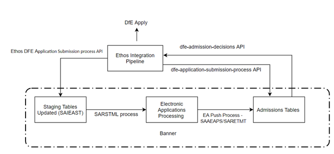

Department for Education (DfE)
DfE Application Processing is the portal through which teacher training applicants can apply for a postgraduate teacher training course to teach in a state primary or secondary school, or in further education.
- Connect from Banner to Ethos Integration Pipelines using Ethos APIs. Ethos Integration Pipelines is a framework that allows institutions to integrate Ethos with non-ellucian partners.
- Capture DfE Application Processing application information in Staging tables.
- Load data to Electronic Admissions Tables for application processing.
- Process Applications using the existing Electronic Admissions Processing logic supplied in Banner in concert with new additional Admissions functionality introduced to support DfE Application Processing. You can use the additional functionality for all application types, with appropriate configuration.
- Check all incoming applications against existing records in the Banner database and push applicants to Banner Person and Admission tables using the existing Electronic Application Push processes (SAAEAPS and SARETMT).
- Review applications and apply decisions for the applications using the SAADCRV page. For the admission records, you can also review the institution applied decisions from DfE Application Processing, that are updated in the SAADCRV page, using the Ethos Integration Pipeline.
- Post application decisions from Banner to the Ethos Integration Pipeline and transact with the DfE Application Processing service.
DfE workflow

DfE pipeline
The latest DfE pipeline version is 2.0.2. and is supported by Banner Student 8.34 and 9.3.37 versions.
- DfeInBound - 2.0.2
- DfeOutBound - 2.0.2
About DfE Application Processing
Key stages of DfE Application Processing
You can process DfE applicants information using various key stages.
- Configure: Set up mappings and system parameters to configure the Banner system.
- Schedule: Schedule DfE Integration Pipeline jobs.
- Use: Run scheduled jobs for application processing and make necessary decisions.
Configure DfE Application Processing in Banner
Configure Electronic Application Processing
DfE uses Electronic Application Push processes to load applications to the Banner Student database.
The STVWSCF and STVWSCT setup pages are already delivered and institutions can view the values that gets displayed. Refer to the Banner Student Reference content to know more about the values that are already available in the pages for your setup.
Configure application type
Use the Application Type Code Validation (STVWAPP) page to define the type of application received.
About this task
Procedure
Configure application sections
Use the Web Application Section Rules (SAAWAPP) page to specify the application sections which make up each Web admissions application and the order in which the sections are displayed.
About this task
Steps to define application sections for the DfE applications are as follows.
Procedure
Configure electronic applicant default rules
Steps to configure the matching and processing rules for the defined application type for DfE.
Procedure
Configure application rules
The Electronic Admissions Application Rules (SAAERUL) page includes several rules that controls how the student admission application data is handled in Electronic Application Processing. Institutions must ensure if the rules defined in the SAAERUL page are accurate and additionally set up the DFEG group required for DfE applications processing.
About this task
Procedure
Configure admission procedures and routines
Before loading data from the holding tables into the permanent Banner tables, institutions must ensure that the information submitted by the applicant is accurate. Configuring application procedures and routines helps institutions to achieve this.
To know about the procedures and routines that are required for DfE applications, refer and download the Banner_Dfe_Admissions_Procedures_Routines_config_data.xlsx file that is delivered along with this release as an attachment.
Also, refer to Procedures used in EDI Processing to know more about admission procedures and refer to Routines Used in EDI Processing to know more about routines.
- After the duplicate checking is turned on for all the Web Application Types in the SAAERUL page, institutions can control the duplicate checking within each Application Type using the SAAECRL page.
- In the SAAECRL page, for the following routines, select the Required flag to prevent duplicates from pushing into Banner:
- P050 R0060 Required Flag Selected, Override Flag Not Selected
- P050 R0070 Required Flag Selected, Override Flag Not Selected
- P050 R0080 Required Flag Selected, Override Flag Not Selected
- P120 R0010 Required Flag Selected, Override Flag Not Selected
- In the SAAECRL page, for the following routines, select the Required flag and the Override flag to allow duplicates to push into Banner:
- P050 R0060 Required Flag Selected, Override Flag Selected
- P050 R0070 Required Flag Selected, Override Flag Selected
- P050 R0080 Required Flag Selected, Override Flag Selected
- P120 R0010 Required Flag Selected, Override Flag Selected
- When the application is loaded using the SAAEAPS/SARETMT push process, the Procedure P030 Biographic Information data can be overwritten depending on how the application routines are set up in the SAAECRL process. To stop the Biographical data from being overwritten,institutions must clear the Required and Override check boxes in the SAAECRL page for the following routines attached to Procedure P030 - Biographic Information. You must establish the setting on each application type.
- P030 R0010 Required Flag Selected, Override Flag Selected
- P030 R0020 Required Flag Selected, Override Flag Selected
- P030 R0025 Required Flag Selected, Override Flag Selected
- P030 R0030 Required Flag Selected, Override Flag Selected
- P030 R0040 Required Flag Selected, Override Flag Selected
- P030 R0060 Required Flag Selected, Override Flag Selected
- P030 R0080 Required Flag Selected, Override Flag Selected
- P030 R0090 Required Flag Selected, Override Flag Selected
- P030 R0091 Required Flag Selected, Override Flag Selected
- P030 R0110 Required Flag Selected, Override Flag Selected
- P030 R0130 Required Flag Selected, Override Flag Selected
- P030 R0150 Required Flag Selected, Override Flag Selected
- P030 R0200 Required Flag Not Selected, Override Flag Not Selected
- P030 R0210 Required Flag Not Selected, Override Flag Not Selected
- P030 R0220 Required Flag Not Selected, Override Flag Not Selected
- P030 R0230 Required Flag Not Selected, Override Flag Not Selected
- P030 R0240 Required Flag Not Selected, Override Flag Not Selected
- P030 R0250 Required Flag Not Selected, Override Flag Not Selected
- P030 R0255 Required Flag Not Selected, Override Flag Not Selected
- P030 R0260 Required Flag Not Selected, Override Flag Not Selected
- P030 R0265 Required Flag Not Selected, Override Flag Not Selected
- P030 R0270 Required Flag Not Selected, Override Flag Not Selected
- P030 R0280 Required Flag Not Selected, Override Flag Not Selected
- P030 R0290 Required Flag Not Selected, Override Flag Not Selected
- If the person is new to Banner, add the person data to Banner
- If the person already exists in Banner and the Banner field is null, load the new person data to Banner
- If the person already exists in Banner and the Banner field is not null, do not update the Banner field
Set up Push process
Use the Elec. Appl. Verify/Load Process (SARETMT) to match, verify, and load the DfE applications that meet your processing guidelines.
Parameters for SARETMT allow processing based upon Application Type, Application Source, Application Term, and the Date Range of when applications were added.
To setup SARETMT parameters, refer to Processing Notes to read more about the parameters.
To execute SARETMT process in steps, please follow the steps listed here.
Set up DfE Application Processing Decision codes
You must setup the STVAPDC decision codes equivalent to the DfE decision codes that campuses will apply.
Procedure
Set up Campus codes
Institutions must set up campus codes for their campuses using the STVCAMP page.
Procedure
- Access the Campus Code Validation (STVCAMP) page.
- In the Code field, enter your institution defined campus codes as required.
- In the Description field, enter the respective campus description.
- Save the record.
Setup STVSBGI code for Provider codes
Institutions must set up provider codes for their campuses using the STVSBGI page.
Procedure
- Access the Source/Background Institution Code Validation (STVSBGI) page.
- In the Source/Background Institution field, enter your institution defined provider codes as required.
- In the Description field, enter the respective campus description.
- From the Type drop-down list, select the college value.
- Optional: Select the Source check box.
- Save the record.
Verify Social Economic Identity Codes
Verify HESA and Nationality codes
DfE can send up to five nationalities for every candidate. DfE sends the HESA data such as gender, ethnicity, and disability codes for candidates after the candidate accepts an offer.
About this task
Procedure
Set up Crosswalk Rules
You need to set up the EDI Cross-Reference Rules (SOAXREF) page for DfE applications processing to map DfE fields for Banner.
About this task
For any of your other mappings that you require for your institutions, review the incoming DfE values. If you are unable to use the values set up in the respective validation pages directly, create mappings in the SOAXREF page for the needed cross-reference labels.
Campus or site codes
Map campus or site codes to Banner.
Procedure
Institution or Provider codes
You must manage your own institution specific provider codes using SOAXREF page. To ensure communication to the appropriate end-points, the provider codes mapping is required for the DfE Ethos APIs, that is, DfE-application-submission-process and DfE-admission-decisions.
Procedure
Decision codes (STVAPDC code)
The Decision Codes from DfE must have an equivalent STVAPDC decision codes mapped to it. The dfe-application-submissions and dfe-admission-decisions APIs requires the decision codes to communicate any decision updates on applications to and from DfE.
Procedure
- Access the EDI Cross-Reference Rules (SOAXREF) page.
- In the key block, enter STVAPDC in Cross Reference Label.
- Navigate to the data block.
- Refer to the DfE decision codes populated in the Electronic Value field (SORXREF_EDI_QLFR). This data is delivered and you cannot update the value. If you attempt to update the delivered data, the API communication will fail.
- Enter the STVAPDC codes defined in the Banner Value field (SORXREF_BANNER_VALUE).
- Save the record.
Term codes
To update the Withdrawn status on all applications and to create new applications after confirmed defer offer, institutions must create term code mappings with the course start dates.
Procedure
Set up Curricula Mapping for DfE courses
Steps used to map DfE course codes to Banner courses.
Before you begin
dfe-application-submission-process API uses this setting to validate and update the curricula for admissions records, when there are changes to the offer course.Procedure
Set up Banner Event Publisher
Configure DfE Application Processing in Ethos Integration
Connect Banner to Ethos Integration for DfE Apply
Create a Banner user for proxy API requests
Create an application in Ethos Integration for DfE Application Processing
The application record contains basic information about DfE Application Processing and how it interacts with Banner through Ethos Integration.
Before you begin
About this task
- Ethos applications for the Banner Student API and the Banner Integration API, which is part of setting up Banner in Ethos Integration.
- An Ethos application for DfE Application Processing, which you will create using the procedure below.
Procedure
-
On the Ethos Integration header bar, click the gear icon
 and then select the Ethos environment where you want to perform this procedure.
and then select the Ethos environment where you want to perform this procedure.
- On the Ethos Integration header bar, click Applications.
- In the Create New App area of the page, click Manually.
-
In the Add Application dialog box, do the following:
- Select Configure REST API proxy.
- Click Continue.
-
On the Application Details page of the wizard, enter the information described below and then click Next.
Field Entry Application name Enter a unique name for this application. Example name: DfE Apply
Make sure the name uniquely identifies this application. When you need to select an application elsewhere in the Ethos Integration user interface, you will use the name to select the correct application.
Description (Optional) Enter a description of this application. -
On the Add Source Applications page of the wizard, set up proxy API requests:
-
On the Add Subscriptions page of the wizard, set up subscriptions:
- Click Add Subscriptions to open the Add Subscriptions dialog box.
- Select dfe-admission-decisions.
- Click Add.
- Click Next.
- Click View Application if you are ready to configure app-specific settings, or click Back to Applications if you want to just create the app now and configure settings later.
Create a crosswalk to map Banner decisions
The decisions crosswalk maps your Banner decisions to DfE decision endpoints.
About this task
Procedure
-
On the Ethos Integration header bar, click the gear icon and then select the Ethos environment where you want to perform this procedure.
- Click the Crosswalks tab.
-
Click Add a new Crosswalk
 to create a new crosswalk.
to create a new crosswalk.
- In the Add new Crosswalk dialog box, enter decisions and then click Create.
- Leave the Default Target Value field blank.
-
Set up the
offermapping:Field Entry Mapping Name (Optional) Enter a descriptive name for this mapping. Example: DfE offers
Target Value Enter offer Source Values Enter the following values. After entering each value, click New Source Value to enter the next value. - Make a Conditional Offer
- Make an Unconditional Offer
- Change Course Conditional
- Change Course Unconditional
-
Click New Mapping and then set up the
rejectmapping:Field Entry Mapping Name (Optional) Enter a descriptive name for this mapping. Example: DfE rejections
Target Value Enter reject Source Values Enter the following values. After entering the first value, click New Source Value to enter the next value. Reject
Withdraw
-
Click New Mapping and then set up the
confirm-conditions-metmapping:Field Entry Mapping Name (Optional) Enter a descriptive name for this mapping. Target Value Enter confirm-conditions-met Source Values Enter Conditions Met -
Click New Mapping and then set up the
conditions-not-metmapping:Field Entry Mapping Name (Optional) Enter a descriptive name for this mapping. Target Value Enter conditions-not-met Source Values Enter Conditions Not Met -
Click New Mapping and then set up the
defer-offermapping:Field Entry Mapping Name (Optional) Enter a descriptive name for this mapping. Target Value Enter defer-offer Source Values Enter Defer Offer -
Click New Mapping and then set up the
confirm-defer-offermapping:Field Entry Mapping Name (Optional) Enter a descriptive name for this mapping. Target Value Enter confirm-deferred-offer Source Values Enter Confirmed Defer Offer -
Click New Mapping and then set up the
Withdraw at candidate requestmapping:Field Entry Mapping Name (Optional) Enter a descriptive name for this mapping. Target Value Enter withdraw Source Values Enter Withdraw at candidate request -
Click New Mapping and then set up the
Reject By Codesmapping:Field Entry Mapping Name (Optional) Enter a descriptive name for this mapping. Target Value Enter reject-by-codes Source Values Enter Reject By Codes - Click Save.
Set up automatic processing of applications
Set up the pipeline jobs in Ethos Integration and the processes in Banner that process applications and decisions.
ID_B_STUGEN_master_2026-03-08/id_ethos/wh_dfe_apply/t_process_incoming_app.html
ID_B_STUGEN_master_2026-03-08/id_ethos/wh_dfe_apply/t_process_app_decisions.html
Schedule Banner processes
DfE Pipeline details
The latest versions for DfEInBound is 2.0.3 and the latest version for DfEOutBound pipelines are 2.0.7 to support DfE 1.4 updates.
DfEInBound 2.0.3 version includes the new fields currently_completing_qualification, missing_explanation and other_uk_qualification_type as part of qualifications object from DfE.
DfEOutBound 2.0.7 version includes DfE Notes updates.
- Interviews
- Notes
- Withdraw at candidate request decision
- Reject applications by codes decision
- The following fields have been added to the work (and volunteering) experience objects:
- skills_relevant_to_teaching
- start_month
- end_month
- Show referee details before offer acceptance
- Referee details will appear as soon as a reference is added by the candidate, but reference feedback will only be included after a candidate has accepted an offer and has received a reference. The following fields are marked as optional in the reference objects:
- reference
- safeguarding_concerns
Manage DfE Applications and Decisions
Review DfE applications
All applications from DfE resides in the SAIEAST page for the institutions to review.
About this task
After you download the applications to the SAIEAST page, you can schedule for offline interviews, assessments, and prepare checklists required for teacher training applications processing. Use the following steps to view the DfE applications.
Procedure
Review electronic applications load status
Institutions can schedule the SARSTML process to load DfE data into Banner Electronic Applications tables. You can also review the data in the SARSTML process when the data load is successful.
Procedure
Verify application load status for Admission Processing
The applications that are loaded to the EA tables are ready for the Electronic Applications Push Processes for loading into Banner Admission tables.
About this task
The SARETMT or bulk push process can be scheduled to load applications to Banner Admission tables. Applications pushed to Banner Admission Tables are denoted by the "P" (Pushed indicator in the SARETMT.lis file).
For applications carrying Push errors, push indicator displays ‘E’. Institutions can review the push errors in the SAAEAPS page and rectify the errors. Subsequently, the SARETMT push process again attempts to push the applicant. The following table lists the possible push indicators and their respective descriptions.
| Process Codes | Description |
|---|---|
| V | Verified, not pushed |
| E | Errors, not pushed |
| S | Suspend, not pushed |
| P | Pushed |
Use the following steps to review the SARETMT job files.
Procedure
Review admission records
Institutions can use the SAAADMS page to review the admissions records.
Procedure
Manage Decisions for DfE applications
Institutions can apply decisions to applications by person ID or view the institution applied decisions from DfE in the SAADCRV page. You can use the All DfE/Conditional Decisions window to apply conditional decisions to applications.
To know more about the SAADCRV page details, field names and descriptions, refer to the SAADCRV page of the Banner Student Reference content.
Apply Decisions from SAADCRV page
Institutions bearing the default browser language as English -UK, will view the Conditional Decisions window displayed as All DfE/Conditional Decisions.
About this task
To apply decisions from the SAADCRV page, use the following steps.
Procedure
Review Decisions status
To view the decision status for every decision sent to DfE in Banner, you must enable the Log Status Of Decision option for DfEConsumeDecision jobs. After you enable the Log Status Of Decision option, the Student Admission Decision Errors (SAISADE) page displays every decision comprised in a job.
Procedure
- Access the Student Admission Decision Errors (SAISADE) page.
- You can either enter the values in the Job Details section or leave them blank.
- Click Go.
- Select the record that has Failure as the job status and click View Errors.
Results
View DfE application decisions
To view the decisions applied from DfE interface in the SAADCRV page, institutions should submit the decisions for applications, and run the DfEInBound pipeline job from the Ethos Integration Pipeline user interface and verify if the decisions are available in the SAADCRV page for the respective admission records.
Before you begin
When you update the decisions and execute a DfEInBound pipeline job for your institution through the DfE interface, the dfe-application-submission API returns the information to the SAADCRV page.
Ensure to run the DfEConsumeDecision pipeline to update DfE with any decisions for applications that you apply through Banner. To update Banner with the current state of applications from DfE, run the DfEInBound pipeline job for your institution. Do not use the DfE user interface and Banner to apply decisions simultaneously. This action causes data concurrency issues. The API will not support decisions concurrently originating from both the systems.
Procedure
Execute the SARSTML process
After every data download to staging from DfE, institutions should run the SARSTML process to ensure that the data updates from DfE that are now existing in the staging table are loaded to the target tables. This ensures data integrity between DfE applications and records in Banner always.
If you do not create admission records, the SARSTML process continues to load or replace the applications data in the EA tables with the updated information from staging.
To load the demographic data such as ethnicity, disability and nationality codes to the GOAPSID page and the gender code to SPAIDEN page, institutions must execute the SARSTML process. Before you execute SARSTML, ensure that the pending_conditions or recruited status updates must be downloaded to Banner (right after applicant acceptance).
To create a new application in the EA tables after Confirmed Defer Offer decision, institutions must ensure to get the application status of pending_conditions or recruited, for confirmed applications downloaded to staging. With this, institutions can execute the SARSTML process for the applied recruitment cycle year (and not the current recruitment year) to create new applications in the EA tables for the latest term code. To create applications in the EA tables successfully, ensure that you map your applications offer course start date to term codes in the SOAXREF page.
Verify DfE applicant EqualityAndDiversity data
The EqualityAndDiversity data for an applicant is processed only after the applicant accepts the offer. After an applicant's offer acceptance, with the subsequent DfeApplicationExtraction pipeline job execution, the Applicant Acceptance decision status gets updated in the SAIEAST page and the respective decision is populated in the SAADCRV page.
| EqualityAndDiversity Data | Page | Table |
|---|---|---|
| Gender (two-character code) | SPAIDEN – Biographical tab | SPBPERS_GNDR_CODE |
| Disability (two-character code) | GOAPSID | GORPSID_SEID_VALUE where GORPSID_SEID_CODE = DFE Disability and GORPSID_SEIR_CODE = DFE_SEID |
| Ethnicity (three-character code) | GOAPSID | GORPSID_SEID_VALUE where GORPSID_SEID_CODE = DFE Ethnic and GORPSID_SEIR_CODE = DFE_SEID |
| Nationality (Array of two-character codes, up to five values) | GOAPSID | GORPSID_SEID_VALUE where GORPSID_SEID_CODE = DFE Nation and GORPSID_SEIR_CODE = DFE_SEID |